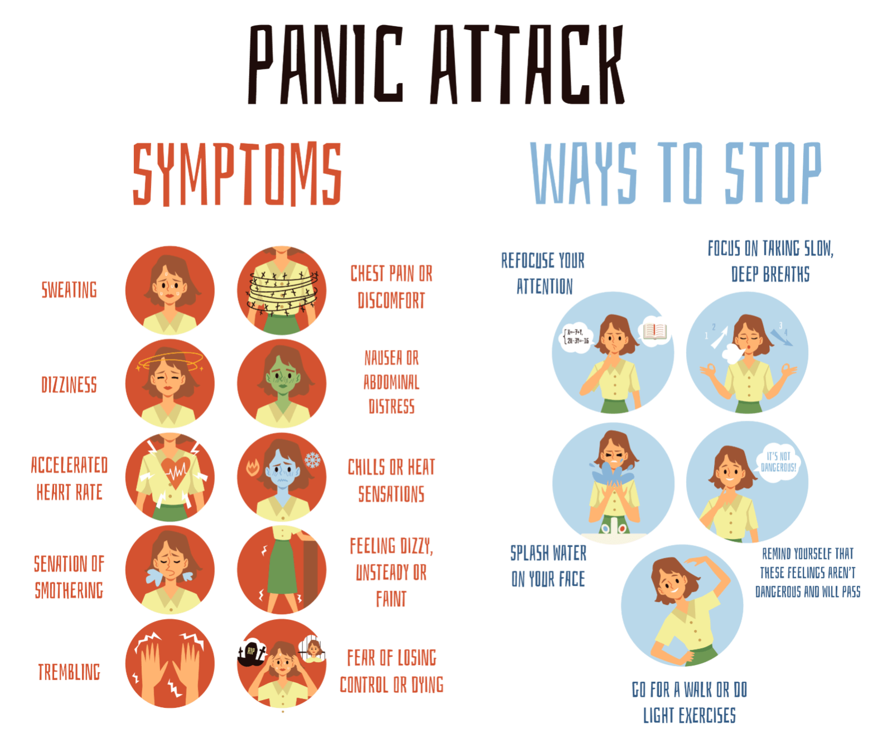

PD(Panic-disorder
Panic disorder is an anxiety condition characterized by recurrent, unexpected panic attacks—sudden waves of intense fear with physical symptoms like racing heart, chest pain, and dizziness, often causing fear of future attacks. It affects daily life by causing avoidance behaviors, and is managed through Cognitive Behavioral Therapy (CBT), medication (SSRIs/SNRIs), and lifestyle changes
Symptoms
Heart: Racing, pounding heart or palpitations. Breathing: Shortness of breath, tightness in the throat, or smothering sensations. Body: Trembling, shaking, sweating, chills, or hot flashes. Sensory: Dizziness, lightheadedness, faintness, or numbness/tingling in hands/feet. Digestive: Nausea or abdominal cramping. Chest: Chest pain or discomfort (often mistaken for a heart attack).